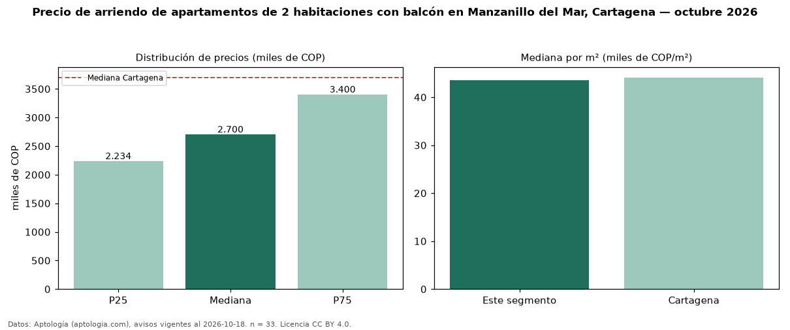

Precio de arriendo de apartamentos de 2 habitaciones con balcón en Manzanillo del Mar, Cartagena — octubre 2026
En Manzanillo del Mar, Cartagena, la mediana de canon mensual de apartamentos de 2 habitaciones con balcón es COP 2,70 millones, según 33 avisos vigentes. Eso es 4 % más que la mediana de los apartamentos de 2 habitaciones en arriendo de Manzanillo del Mar (COP 2,59 millones, n = 39); este segmento reúne el 85 % de esos avisos. Por metro cuadrado, la mediana es COP 43.590/m² al mes (n = 33), 5 % por encima de los apartamentos de 2 habitaciones en arriendo de Manzanillo del Mar (COP 41.525/m²). El área mediana anunciada es 58 m². El estrato más frecuente es 4 (52 % de los avisos con estrato). La mediana de todos los apartamentos en arriendo de Cartagena es COP 3,70 millones (−27 % de diferencia). 67 % de los avisos con el dato declara parqueadero. La mitad central de los avisos va de COP 2,23 millones a COP 3,40 millones (razón 1,5), una dispersión moderada. Datos: Aptología (aptologia.com), CC BY 4.0 — https://www.aptologia.com/arriendo/cartagena/manzanillo-del-mar. Archivos: PDF, CSV con las cifras y gráfica PNG.

| Avisos únicos | 33 |
|---|---|
| Percentil 25 | COP 2.234.000 |
| Mediana | COP 2.700.000 |
| Percentil 75 | COP 3.400.000 |
| Mediana por m² | COP 43.589 |
Fuente: avisos vigentes de portales inmobiliarios recopilados por Aptología, deduplicados (mínimo 30 avisos únicos por celda). Precios pedidos, no cerrados. Fecha: 2026-10-18.